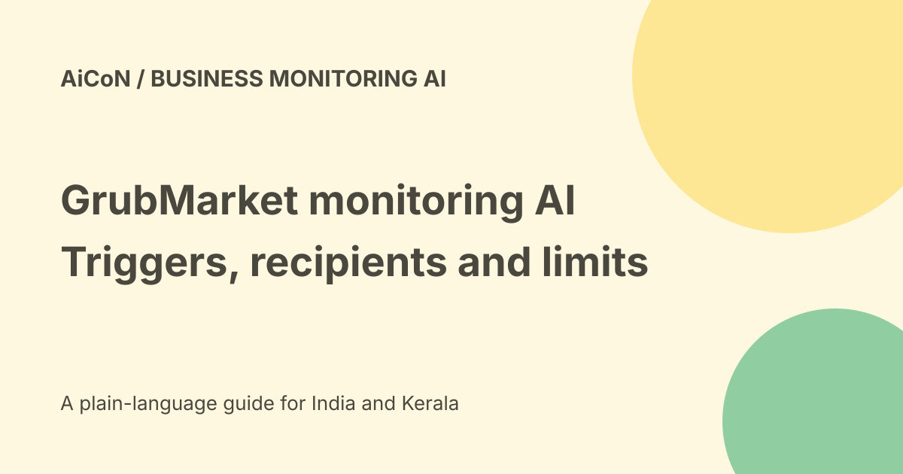

GrubMarket Monitoring AI Agent: triggers, alerts and limits
GrubMarket announced a Monitoring AI Agent inside GrubAssist AI for food supply-chain operations. It describes background checks of connected business data and email alerts when configured conditions are met. An alert can help a team investigate, but is not proof that the data is complete or a corrective action was taken.

What it watches
The official announcement names inventory, margins, customer activity, vendor performance, receivables and other metrics. It describes passive anomaly detection and custom monitoring rules.
Examples include a customer not ordering for over seven days, a projected vendor shortage and a customer exceeding a credit limit. These are business-specific conditions, not one universal important-alert setting.
Connected systems
The release lists native integrations including WholesaleWare ERP, Famous Software, Produce Pro, Thyme Software and QuickBooks.
A named connector does not establish that your version, account or fields are supported. Check data freshness, sync errors, field meaning and read permissions before relying on an alert.
Natural-language setup
GrubMarket describes creating a monitoring prompt, defining triggers, adding instructions and setting alert preferences inside GrubAssist AI.
Clear trigger boundaries matter. Define what counts, which time window applies and what should happen when data is missing. Avoid vague rules such as alert when something looks bad.
Email is a disclosure
The release says formatted email notifications go to designated team members with supporting context. That can expose customer, price, credit and supplier information.
Approve the actual recipients and permitted fields. A shared alert group may include people who should not see every financial detail. No alerts, recipients or outbound emails were configured for this guide.
Alerts do not fix the business automatically
The announced agent helps teams notice issues and decide what to do. It does not establish permission to block an order, change a credit limit or place a purchase.
Keep corrective actions separate from notifications. Someone should own investigating, resolving and closing each material alert.
A small pilot
- Choose one metric with a clear source.
- Define a threshold and observation window.
- Check data refresh and time zone.
- Use a small test dataset.
- Select authorised recipients and minimal fields.
- Test an expected alert and a no-alert case.
- Test stale or missing data.
- Measure false positives and missed alerts.
- Define acknowledgement and escalation.
- Review results before adding more rules.
Always on has dependencies
The vendor describes continuous background workflows. Actual monitoring still depends on connected systems, permissions, service availability and alert delivery.
Check when a rule last ran and whether an email was delivered. Silence could mean no problem, a broken connection or a rule that did not evaluate.
Threshold examples need context
Low stock can be normal before a replenishment. A quiet customer may be seasonal. A credit alert may use outdated payments.
Use supporting context and compare with the source system before reacting. Avoid sending repeated alerts that hide more urgent problems.
Price and India access
No final public subscription price, free allowance, INR quote or India entitlement was established in the checked announcement.
Ask about the monitoring module, integration work, query frequency, email volume, support and renewal. No account was connected, private business data uploaded, sales request sent or subscription bought here.
Privacy and retention
ERP and finance data can include personal and commercially sensitive records. Check retention, processing location, subprocessors, logs and deletion terms before enabling monitoring.
Public feature claims do not establish a no-training or local-data guarantee. Apply the business's access rules to every source and notification.
What changed since the original post?
We keep the named monitoring capabilities but distinguish alerts from actions, configured recipients from automatic disclosure and always-on marketing from verified reliability.
Frequently asked questions
Does it fix every detected problem?
No such automatic-remediation scope was established.
Is silence proof everything is fine?
No. Check source freshness and rule execution.
Was a live integration tested?
No.
Sources: Official Monitoring AI Agent announcement. Checked 7 October 2026.